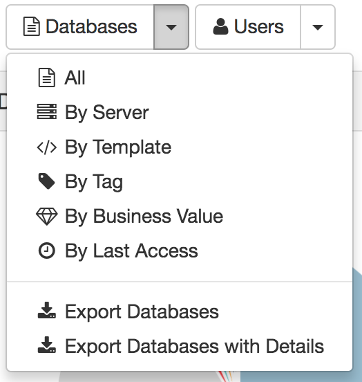
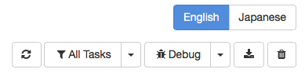

Exporting Data
Adviser allows you to export most data to comma-separated value (CSV) files for further reporting and analysis. The format of the CSV file has been chosen carefully to import well into Microsoft Excel, but it is important to follow the steps below to ensure that the file imports correctly. At least on some platforms, Excel will not import the file correctly if you simply double-click on the file in Explorer.
Available Reports
- Catalog
- All Databases
- All Users
- Usage
- All Databases with usage totals
- All Users with usage totals
- Databases with Details: a report with a row for every database/user combination for which there is recorded usage
- Complexity
- All Databases with complexity totals
- Guidance
- All Databases with guidance
- Logs
- All log entries
Generating a Report
Reports are generally available from the Databases and Users dropdowns in each module.

The logs report is available using the download button on the main navigation bar.

The report may take a little time to generate, and it should automatically be downloaded to your browser's downloads folder when it is complete.
Importing a Report into Microsoft Excel
CSV is a very basic file format that does not have specific support for writing dates and times or international characters. To ensure that Adviser data exports correctly, our reports are written using UTF-8 encoding and using a modified ISO format for date times. Some versions of Excel will not automatically import files like this, but the steps below should ensure that the file imports correctly.
- With Excel running, select File|Import.
- Select CSV File from the list of options and locate the file.
- Make sure that the Text Import Wizard has selected Delimited for the file format, not Fixed Width.
- Accept the defaults on the remaining steps in the Text Import Wizard and choose where the report should be placed on the current worksheet.
- If the report contains any dates, Excel may display them incorrectly. If dates display similarly to 31:12.0 then simply select the column(s), and choose Format Cells... from the right click menu. Selecting any format in the Date category will display the dates correctly.